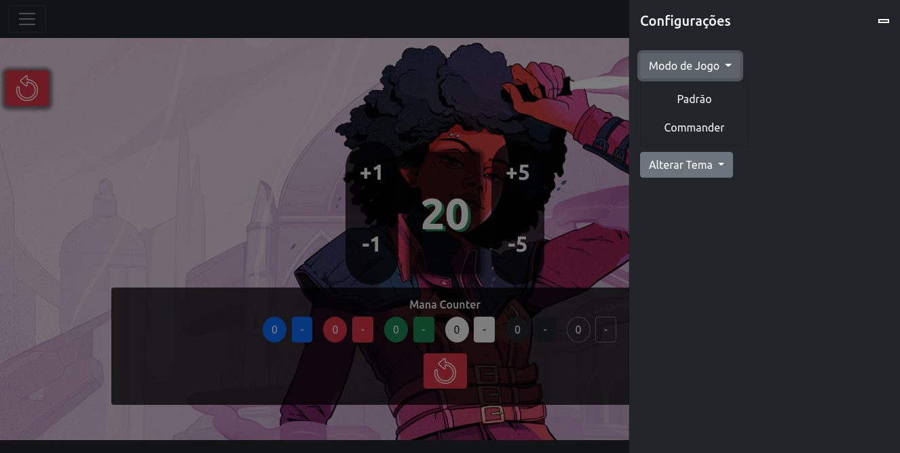
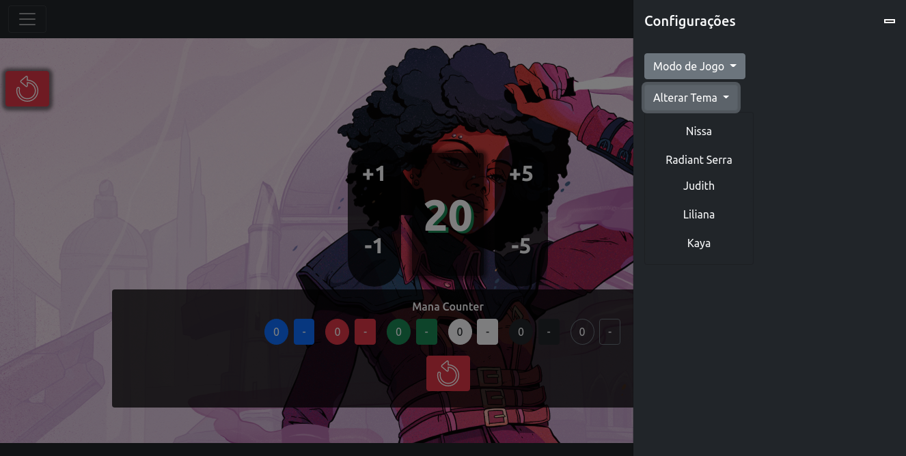

Contador de MTG

O Projeto
Trata-se de um projeto simples de um contador de pontos de MTG com funcionalidades básicas e duas modalidades de jogo: formato Padrão e Commander. Inteiramente escrito com o uso do framework Bootstrap e a biblioteca JQuery, que, como de conhecimento comum dos devs, trabalham em conjunto. Todas as funções para a manipulação do DOM foram chamadas em um documento JS separado, para melhor manuntenção. Além do uso dos estilos de Bootstrap, também foi criado um estilo próprio para personalização do projeto. Graças a magia do FlexBox, o projeto é responsivo para uma grande variedade de telas, se adaptando muito bem a dispositivos mobile.
Selecionando modo do jogo e alterando o tema
Com um menu simples, é bastante fácil selecionar o modo de jogo entre "Padrão" e "Commander".
O mesmo para a alteração dos temas.
Responsividade
O projeto está bastante responsivo, tendo um layout até mesmo mais atrativo que na versão para desktop. Isso se deve muito em razão da maneira como o framework Bootstrap é planejado: "mobile first", o que se encaixou perfeitamente com este projeto, já que o foco do desenvolvimento deste tipo de contador são os dispositivos móveis.